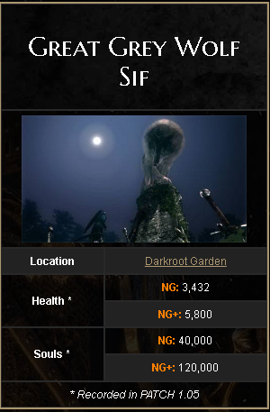
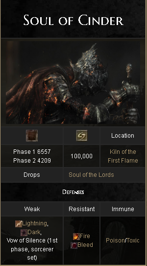

Sif era o lobo compnaheiro de um cavaleiro chamado "Artorias o Caminhante do Abismo",
apos sua derrota para "Manus o pai do Abismo" Artorias usou seu escudo para proteger Sif,
atualmente Sif se encontra no tumulo de artorias, protegendo o anel que seu mestre usava,
para caminhar pelo Abismo, e Sif luta com qualquer um que ouse tomar o anel para que ninguem cometa
o mesmo erro que seu falecido dono.
É um detalhe em sua luta contra o Sif quando ele esta com pouca vida ele começa a mancar,
e como jogador sempre fico me sentindo mal toda vez, já que ele é um chefe obrigatorio
para zerar o jogo(Press F to pay respect)
"Alma das Cinzas" é o chefe final de Dark Souls 3, ele é um amalgama de todos os guerreiros(as) que algum dia tentaram,
ou foram bem sucedidos em reacender a chama, e o chefe em si é uma entidade criada pela propria chama para testar e proteger
a chama de qualquer um que se aproxime, por ser um amalga de varios guerreiros, a alma das cinzas tem uma divercidade de ataques
onde ele fica alternando entre suas duas fases, inclusive usando movimentos do proprio "Gwyn Lord of Cinder" que é o chefe
final do primeiro jogo da franquia.
Ele é seu ultimo desafio, sua ultima barreira antes do seu personagem fazer a escolha mais importante de todas,
se ele vai acender a chama novamente ou ira se tornar o lorde od abismo onde trará novamenete a era da escuridão
para o mundo.